Instalasi Software OtomaX
Menginstall Software OtomaX hanya dapat dilakukan apabila Anda:
- Telah menyiapkan Komputer, Modem atau HandPhone, Simcard calon dongle dan lainnya; selengkapnya klik disini.
- Telah menginstall Software pendukung OtomaX; jika menggunakan Windows XP klik disini, Windows 7 atau 8 klik disini dan jika Windows 10 klik disini.
- Telah membuat folder instalasi; selengkapnya klik disini.
Setelah 3 poin diatas selesai disiapkan dan dilakukan, baru kemudian Anda dapat melakukan instalasi Software OtomaX dengan langkah - langkah sebagai berikut:
- Install Driver HandPhone atau Modem
- Install Software OtomaX
- Restore Database
- Setting SIM Card dongle
Install Driver HandPhone atau Modem
Sebelum menginstall Software OtomaX sebaiknya install driver HandPhone atau Modem dahulu.
- Siapkan file driver HandPhone atau Modem yang akan digunakan, kalau menggunakan HP Siemens C55/M55 atau Modem Wavecom dapat mendownloadnya disini.
- Extraxt file PL2303_Prolific_DriverInstaller_v1.12.0.zip, dan kemudian klik 2x pada file bernama PL2303_Prolific_DriverInstaller_v1.12.0.exe.

- Klik Yes.

- Klik Next.

- Klik Finish.

Install Software OtomaX
Tata cara menginstall Software OtomaX ialah sebagai berikut:
- Cari file OtomaX Free Edition yang telah Anda download. Bila belum silahkan download dahulu disini.
- Extraxt file Free_Edition_3.6.6.zip (bila menggunakan versi 3.6.6), dan kemudian copy ke folder OtomaX yang telah dibuat sebelumnya (lihat disini), atau folder lokasi yang Anda inginkan.

- Agar mudah menjalankannya buat shortcut OtomaX di Desktop.


Restore Database
Tata cara restore Database OtomaX ialah sebagai berikut:
- Klik tombol Start cari SQL Server Management Studio Express, klik kanan dan pilih Run as administrator.

Windows XP, Windows 7, Windows 8

Windows 10
- Klik Yes.

Windows XP, Windows 7, Windows 8

Windows 10
- Klik Connect.

Windows XP, Windows 7, Windows 8

Windows 10
- Pilih Databases, klik kanan kemudian pilih Restore Database....
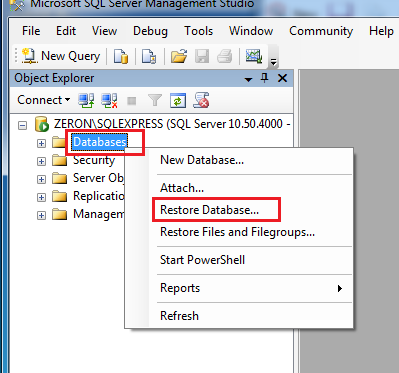
Windows XP, Windows 7, Windows 8
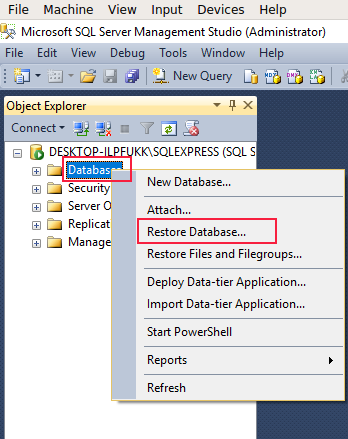
Windows 10
- Jika menggunakan Windows XP, Windows 7 dan Windows 8, pada box To database: isi otomax. Kemudian pilih CheckItem From device dan klik tombol sebelah kanannya.
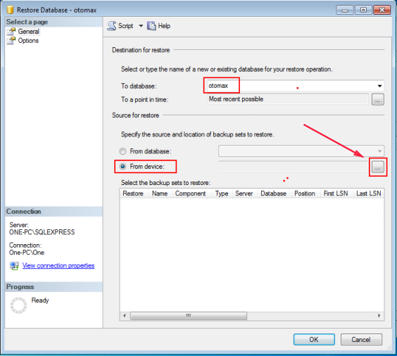
Jika menggunakan Windows 10, pilih CheckItem Device dan klik tombol sebelah kanannya.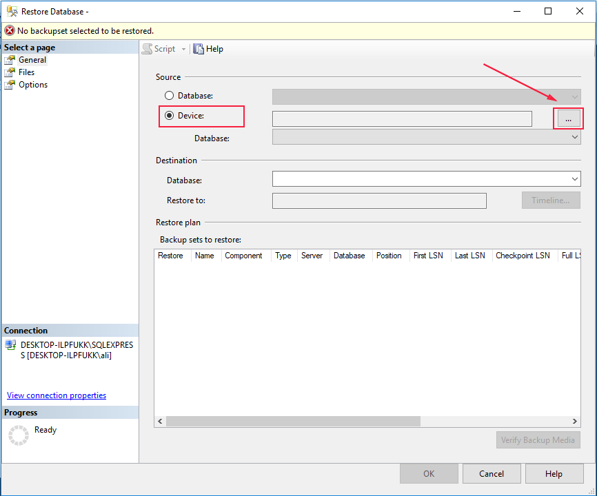
- Klik Add.
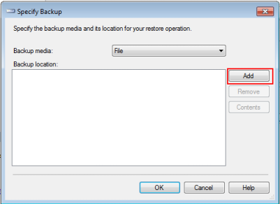
Windows XP, Windows 7, Windows 8
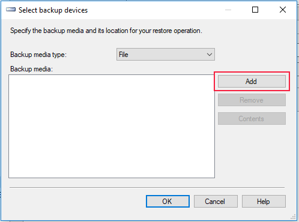
Windows 10
- Cari folder OtomaX tempat instalasi OtomaX, dan kemudian pilih file di dalam folder tersebut yang bernama db_otomax.bak serta klik OK.
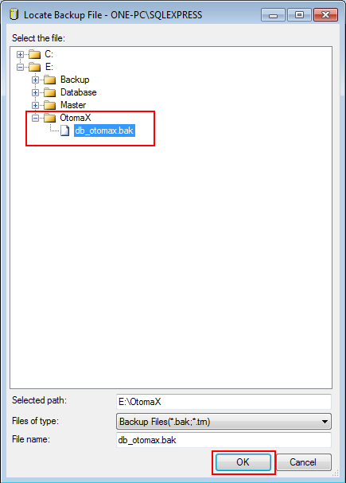
Windows XP, Windows 7, Windows 8
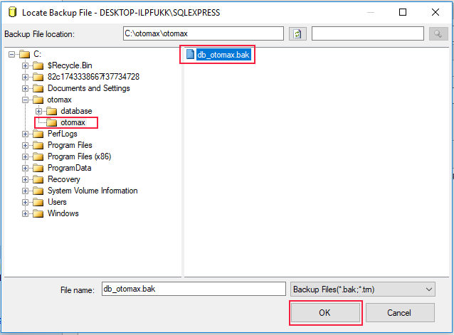
Windows 10
- Klik OK.
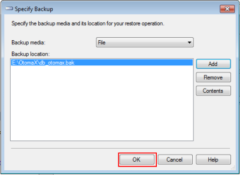
Windows XP, Windows 7, Windows 8
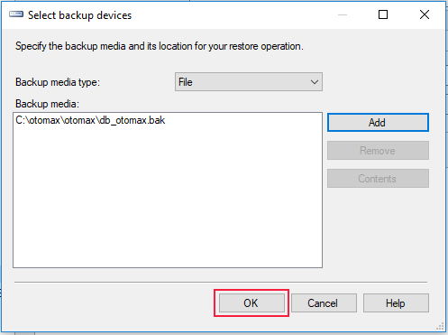
Windows 10
- Centang CheckBox Restore.
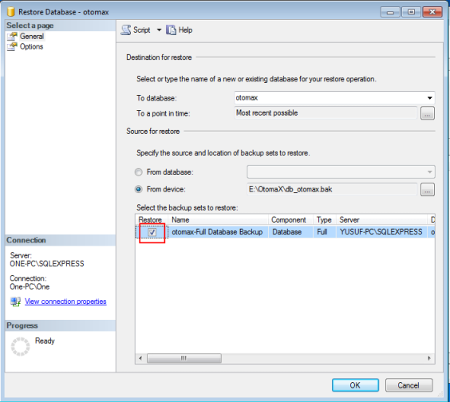
Windows XP, Windows 7, Windows 8
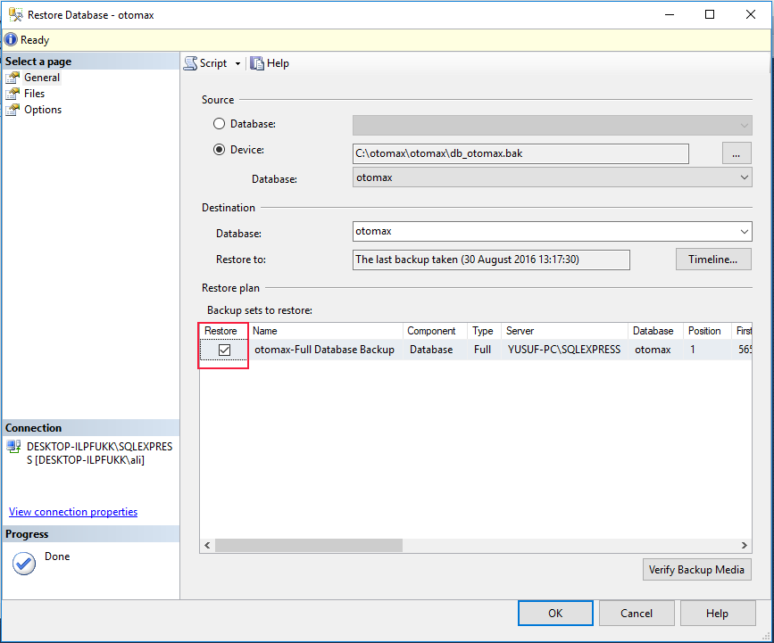
Windows 10
- Jika menggunakan Windows XP, Windows 7 dan Windows 8, klik Options, kemudian klik tombol sebelah kanan otomax.
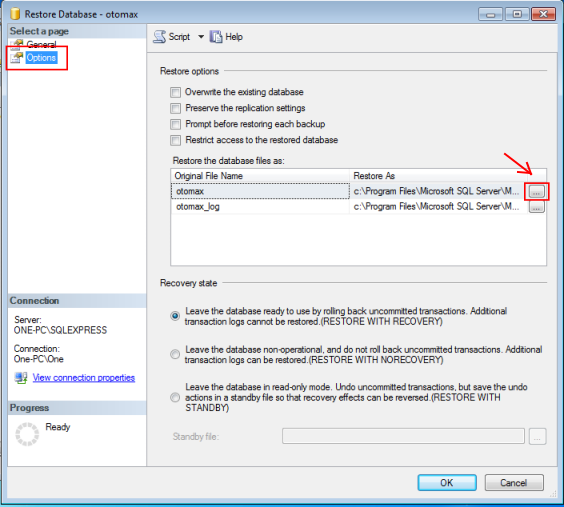
Jika menggunakan Windows 10, klik Files, kemudian klik tombol sebelah kanan otomax.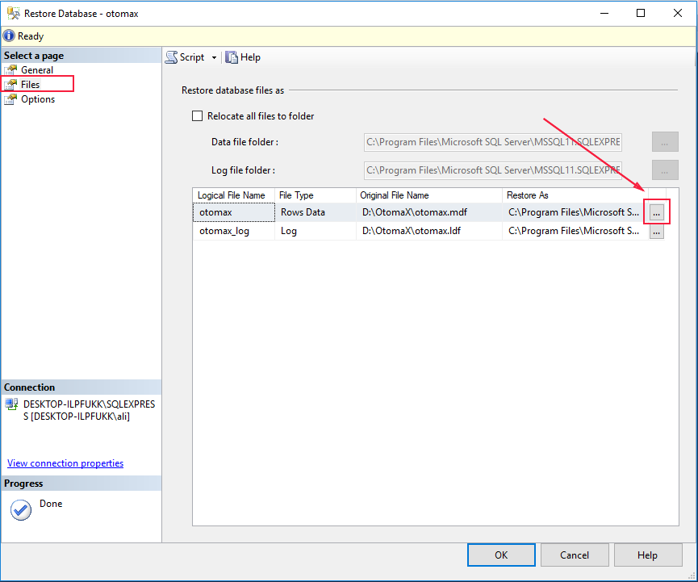
- Pilih folder Database yang sudah dibuat sebelumnya (lihat disini), kemudian pada box File name isi otomax.mdf dan klik OK.
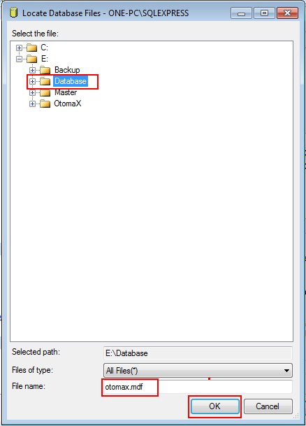
Windows XP, Windows 7, Windows 8
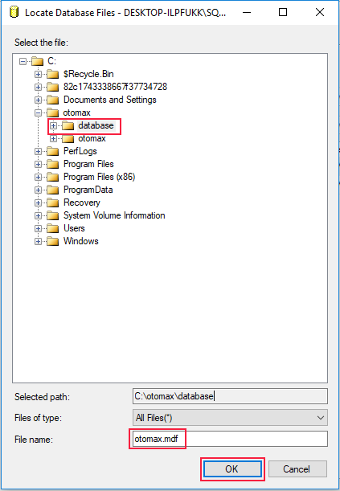
Windows 10
- Klik tombol sebelah kanan otomax_log.
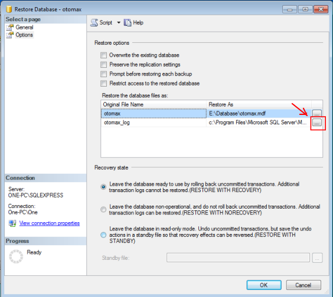
Windows XP, Windows 7, Windows 8
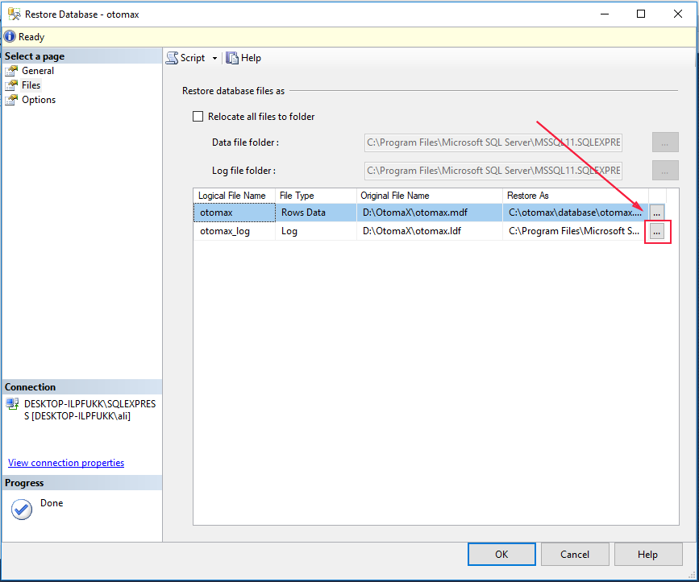
Windows 10
- Pilih folder Database yang sudah dibuat sebelumnya (lihat disini), kemudian pada box File name isi otomax.ldf dan klik OK.
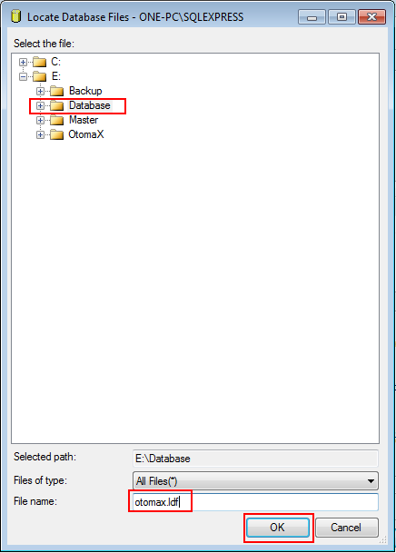
Windows XP, Windows 7, Windows 8
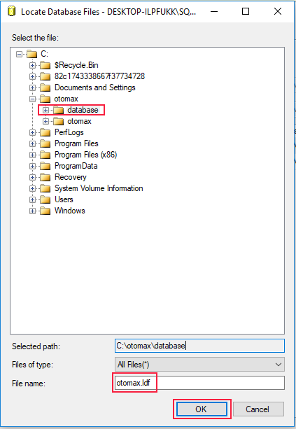
Windows 10
- Pastikan hasilnya seperti gambar di bawah, dan klik OK.
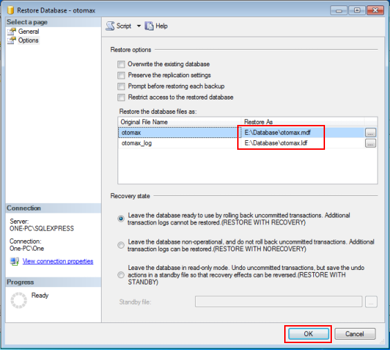
Windows XP, Windows 7, Windows 8
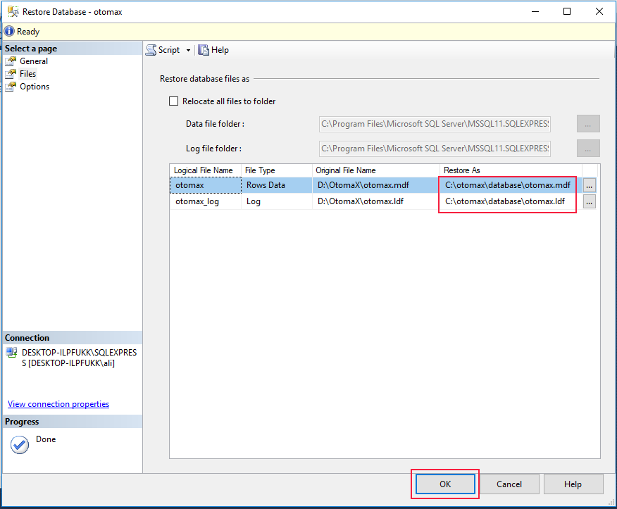
Windows 10
- Restore sukses, kemudian klik OK.
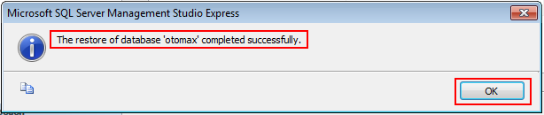
Windows XP, Windows 7, Windows 8
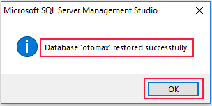
Windows 10
- Database OtomaX akan terbentuk di folder Database, lihat gambar di bawah.
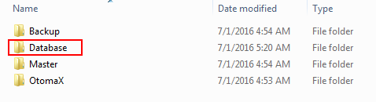
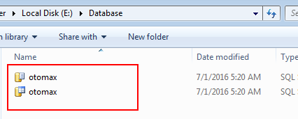
Setting SIM Card dongle
Tata cara Setting SIM Card dongle ialah sebagai berikut:
- Jalankan Software OtomaX dengan klik 2x pada shortcut-nya yang telah dibuat sebelumnya di Desktop.

Jika muncul seperti gambar di bawah, klik OK

Selanjutnya klik tombol Connect.

Jika muncul form login masukkan Login ID: admin, Password: admin dan klik Login.

- Masukkan SIM Card calon dongle ke HandPhone, Modem Wavecom atau lainnya (selanjutnya disebut dengan perangkat).
- Tancapkan kabel USB/Serial perangkat Anda ke Komputer, akan muncul proses install driver perangkat.
- (Untuk Windows 7) klik tombol Start, pada box search ketik device manager, kemudian klik Device Manager.

- Perhatikan Port COMXX (dimana XX ialah berupa angka) dari perangkat Anda. Misalnya perangkat Anda di COM26.


- Masuk ke OtomaX, pada Terminal !#dongle klik kanan dan pilih Setting. Kemudian pada Serial Port pilih COM26 (sesuaikan dengan COM perangkat Anda), pada Flow Control pilih Hardware atau RTS jika menggunakan perangkat Modem, jika HP pilih None; dan klik tombol Simpan.

- Icon Terminal akan berwarna biru pertanda OtomaX sudah bekerja.
Instalasi Software OtomaX sudah selesai, siap digunakan. Selanjutnya Anda dapat mencobanya; atau membeli Edisi Berbayar, selengkapnya klik disini dan klik disini.
Adapun untuk tata cara pemakaian OtomaX klik disini dan klik disini (silahkan dibaca dan dipelajari).
Catatan: Meskipun mencoba OtomaX Free Edition tetap diperlukan Modem atau Handphone yang support OtomaX dan SIM Card seperti disini serta disetting sesuai tutorial di atas. Bila tidak, OtomaX Free Edition tidak dapat bekerja secara normal.